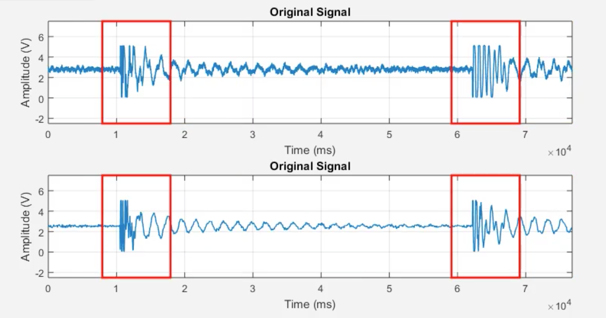
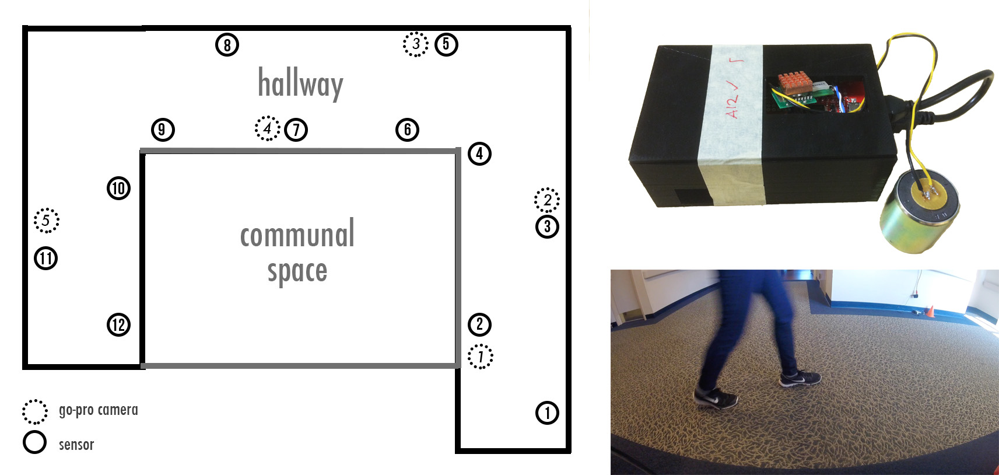

Research conducted under Prof. Hae Young Noh and Mostafa Mirshekari
1) Create a visualization similar to the Marauder's Map from Harry Potter that plots footsteps detected from vibration sensors.
2) Design and set up an experiment that detects footsteps in a senior care facility.
The Marauder's Map aims to serve as a personal identifcation system that can be used to monitor activity in a given space that is visually appealing and non-intrusive.

I programmed real-time analysis in Matlab that detects a footstep from vibrations, and then plots the step on a map at the closest sensor.

In addition, I helped design and run a two-week long experiment in a senior care facility. 12 sensors were placed in the hallway and continuous data was taken and monitored. 5 GoPros were also set up throughout the hallways and synchronized to the sensors.

Data from this experiment will be parsed and used to create an algorithm to determine location based on vibrations from multiple sensors.